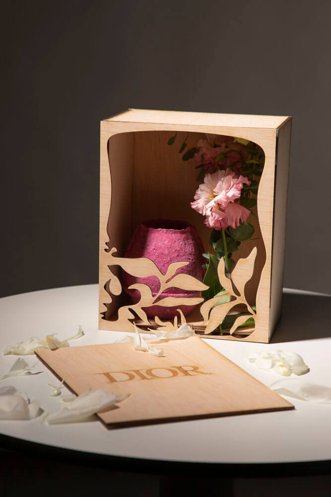
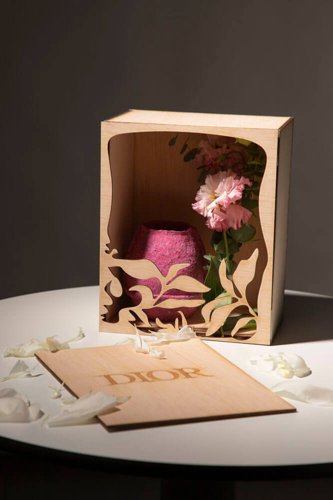
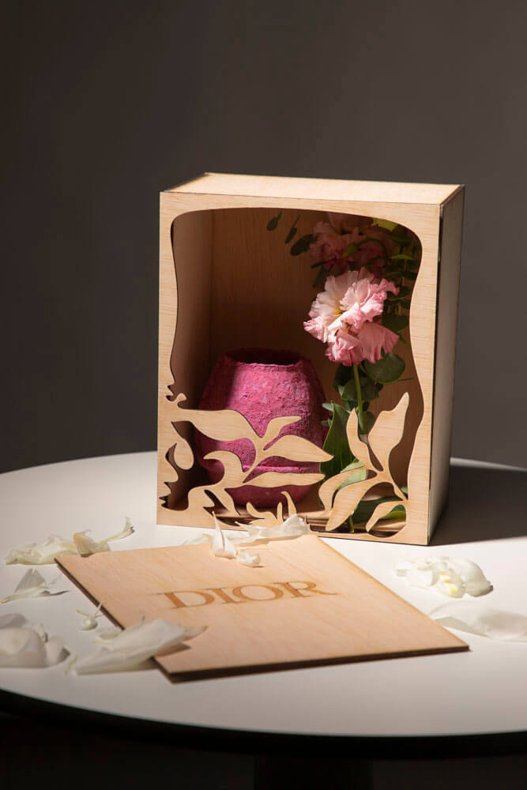
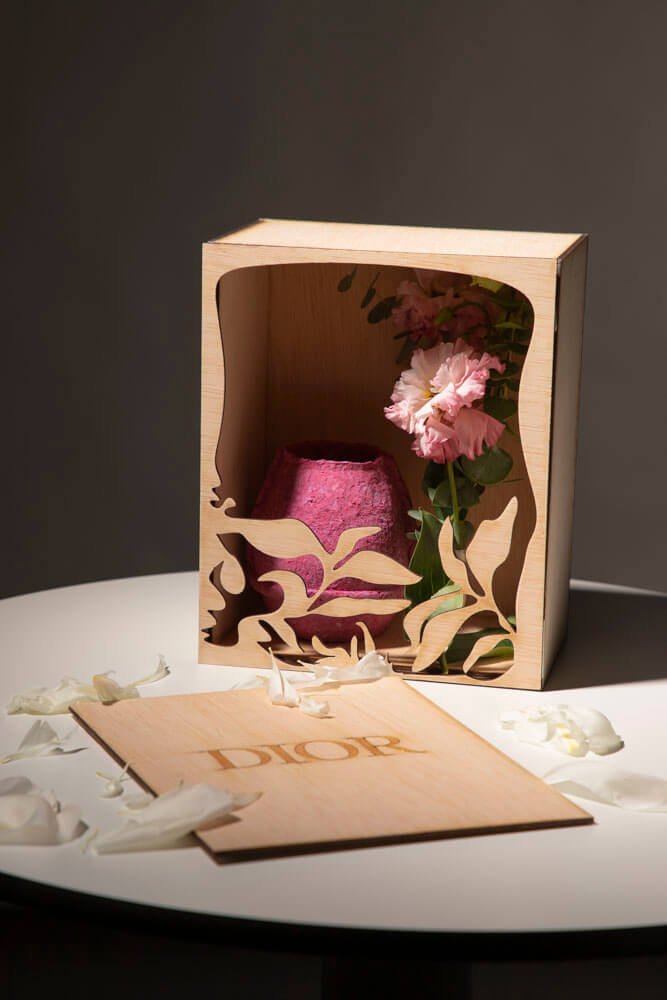

Dior Bloom Experience is a corporate gift proposal for Dior conventions. The project consists of a vase made from recycled cardboard pulp and a wooden box, both handcrafted using repurposed materials from the brand itself. Through research, interviews, and material testing, a piece was developed that merges sustainability, functionality, and aesthetics — inviting the user to complete the experience by assembling their own bouquet.